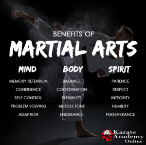
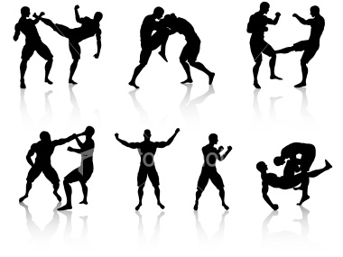
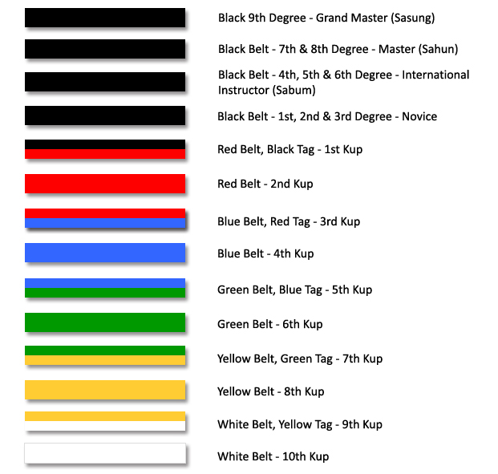

To navigate this website click the "All Tags" to see a list of all the tags related to these martial arts such as: throws, grappling, kicks, weapons, ect. These tags will be linked to martial arts that are focused on that discipline.
Go to the "All Martial Arts" to view a list of all martial arts listed here and view them. The "Weapons" page will show weapons used in various martial arts and the styles they are involved in.
These descriptions will not be a fully history of the martial arts but rather a description of the style itself.
Martial Arts describes a wide range of systems, traditions, and styles used for self-defense and combat. But many martial arts also teach other aspects that have many benefits such as: discipline, flexibility, confidence, respect, patience and more.

There are many different martial arts; some styles having different variations that have broken off from the original such as Jujitsu and Brazilian jiu-jitsu. Most take many years possible decades to become a full master of that style.
Some styles of martial arts have been around for thousands of years and some have only been developed within the last century.

The styles vary greatly in their teaching. Some are made for sport while others are strictly for self-defense or combat. Many teach the different philosophies of that sport and others focus more on training. Certain styles are made for use almost entirely with weapons, many teach different weapons skills, and some only teach defense against weapons.
Most martial arts have their students wear colored belts or obi's to show their skill level, starting with white and ending in black belts. The color levels and number of belts between white and full master black belt vary from style to style.
Belts are worn for a certain amount of time while learning new skills and techniques to pass a test to earn the next belt level. The time worn is shorter in the lower belt levels usually around a few months with the higher belt levels being a year or more.
Below is an example of a belt system from the OMR Taekwondo Academy.

Back to Top